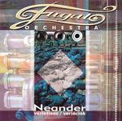

| Artist: | Fugato |
| Title: | Neander Variations |
| Label: | Stereo Periferic BGCD 121 |
| Length(s): | 56 minutes |
| Year(s) of release: | 2004 |
| Month of review: | [07/2005] |
| 1) | Neander Valley Chase | 4.32 |
| 2) | Peace Of Mine | 3.28 |
| 3) | Virelai | 4.27 |
| 4) | Serenade | 3.20 |
| 5) | Marine Myth | 5.07 |
| 6) | Etnoid | 7.30 |
| 7) | Haiku I. | 1.36 |
| 8) | Haiku III. | 3.11 |
| 9) | Witches' Sabbath | 4.33 |
| 10) | Tale About Modesty | 1.36 |
| 11) | Hoquetus | 2.50 |
| 12) | Joke | 2.06 |
| 13) | Neander-variation I. | 2.52 |
| 14) | Neander-variation II. | 3.36 |
| 15) | Neander-variation III. | 5.53 |
Peace Of Mine continues with very melodic flute and piano, again playing extremely memorable themes. Because of the flute and the dancing melody Virelai has a very folky feel, although it also has elements of string orchestra.
Serenade is again a piece built around an excellent theme, the second part being dominated by jazzy piano. Then the thematic element returns. Although the band is very strong melodically, these first four tracks show that compared to for instance After Crying there is less danger, less tension, it is all a bit too sweet.
Marine Myth and Etnoid are both somewhat longer tracks. The first of these sounds a bit modern: percussion and shards of flute, but mellow violins in the back. Melodically there seems to be a relation to one of the foregoing themes. The presence of the keyboards turn this piece into one which has elements of scratching and the percussion of modern dance music. In between the string add a folky element, while the conclusion has a veritable keyboard solo. Not very impressive this track. Etnoid then means back to the light orchestral music larded with rock elements. There is some urgency here and changes of pace keep one awake. In fact, the drummer is hacking away quite a bit on this one. The piano playing is fast and fluent. At three quarters, it becomes almost circus music, but not for long.
Haiku I. and Haiku III are up next. The former of these is a somber string oriented piece with the female vocalists adding their two cents. This is more in the line of modern film scores. The second Haiku sounds looser, a result of the type of percussion used and the accidentalness of the vocals. Towards the end the song gets to be more melodic.
Witches' Sabbath does sound at all like what I expected. The keyboards are most important here, and the song has a heavy beat. The modern dance influence, I guess. The second part has vocals again and is moody and classical. Some links exist to Adiemus and related bands, here. But the keyboard solo stuff is much too groovy.
Tale About Modesty is a short delicate piano piece, alternating with marimba. A bit of strings are thrown in at the end. Hoquetus is in places very similar to After Crying, especially the trumpet parts. Joke is a combination of a rather heavy beat and flute, the composition and melodies are not so interesting though.
The final three tracks are Neander-variations. The first of these brings in a chamber orchestra feel with quite a dark mood. You can be reminded of the modern film scores, and when the trumpet comes in, there is plenty of After Crying here. The second part is more piano oriented, getting a bit jazzy later on when the percussion sets in, upping the pace. The strong theme of the opener recurs in the final part, although the middle passage finds us wandering and meandering about between the occasional keyboard, trumpet, flute and bass solo.A bit of a solo spot where everyone gets his turn.